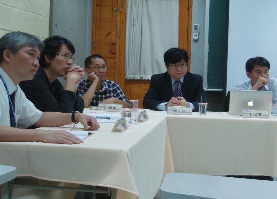

也紀念我們永遠的朋友 李士傑先生（Shih-Chieh Ilya Li）。
你覺得什麼是資訊時代的共有資源？「資訊時代的共有資源」活動記實
◎ 本文轉錄自台灣創用CC計畫網站採用 CC-BY-SA 3.0 台灣授權條款釋出
「資訊時代的共有資源」專題，已於 2011.11.19 在交通大學客家文化學院順利舉辦，會中有許多精采的對話。這裡提供講者精采摘要，讓大家延續思考這個重要的議題。
合理使用誰的著作？
論合理使用與出處明示之關聯
李治安 政治大學法律科技整合研究所暨智慧財產研究所 合聘助理教授
合理使用向來是著作權法中之重要課題，國內外就合理使用之判斷標準相關議題早已累積了數量龐大的文獻，但是實務上在判斷合理使用成立與否時，有一幽暗未明之問題，至今仍無確定見解，亦即利用人明示出處與否，是否影響合理使用之成立，有法院認為應將利用人之明示出處義務與合理使用脫鉤處理，亦有實務見解將明示出處與否當作合理使用成立之先決條件者。此一懸而未解的問題，有時亦會對部分利用人帶來相當迷思，渠等或認為，若利用時明示出處，系爭利用行為即可成立合理使用。但該等見解均存在相當偏差，此等不確定性對法院及利用人而言，均造成合理使用制度設計時所未預期之成本。
本文以為，利用人明示出處之義務與著作人之姓名表示權有相當關聯，但兩者在我國現行著作權法中，分別受到著作財產權及著作人格權之規範。由現行著作權法之規範及體系之觀點而言，利用人是否明示出處，應對合理使用成立與否造成相當影響，但其影響並非絕對，仍須藉由更細緻的法律分析，並考量相關利用情況，方能得知影響程度為何。本文藉由論理、體系及比較法之方法，探討利用人出處明示義務於合理使用規範中之地位，並據以提出對我國司法及立法上之相關建議。此外，本文亦分析利用人在何等情況下，能免除系爭出處明示之義務。
關鍵詞：著作權、合理使用、明示出處、著作人格權、姓名表示權、利用之目的及性質、刑事責任
「商」之所趨，「民」之所向？
從「三振條款」到「著作權警報系統」探討網路服務提供者與使用者間的矛盾關係
葉志良 元智大學資訊社會學碩士學位學程 助理教授
由於人民對於網路之使用依賴甚深，中斷網路使用對人民而言可說是一種基本權利的侵害；然而網路使用並非毫無規範，特別是媒體與娛樂產業亟欲對網路上發生之著作權侵害行為（例如非法 P2P 檔案分享）進行事前防堵、減少損害等自律或他律等措施。2008 年 12 月美國唱片業協會 (RIAA) 為減少對各地 P2P 軟體侵權使用者進行訟爭，希望與 ISP 業者共同合作採取「三振條款」措施，由 ISP 業者對屢次侵權之使用者，予以斷線或終止服務的機制，並欲藉由遊說與貿易談判方式推廣至全球各國；然此措施恐有違反憲法上之基本權利、比例原則與法律正當程序，飽受各界批評。
2011 年 7 月美國 ISP 業者及影視聽內容組織宣布採用「著作權警告系統」，一旦發現網路服務帳號可能遭用以竊取數位內容，使用者將收到數個階段之警告信函而予自制，對屢勸不聽者雖並未要求 ISP 業者終止其帳號，ISP 業者仍可祭出「緩解措施」協助制止；不過 ISP 業者仍將持續受制於 1998 年美國 DMCA 法案之規範，為享受民事免責利益而執行「通知及取下」之必要措施。在著作權系統下，著作權人、ISP 業者與使用者原立於平衡之三角關係；然近來著作權法對權利人保護日益強大，而 ISP 業者為免除間接侵權責任而「依附」於著作權人陣營，使原本即為被動與弱勢的使用者，其可利用與分享的空間逐漸窄化，尤其在「超著作權」 (paracopyright) 盛行之今日，合理使用竟成著作權人自行設定與解釋的「恩惠」。本文從知識流通與查緝盜版的公私利益進行權衡分析，認為著作權體系的平衡保障建立起來，始為討論著作權保障的真義所在。
關鍵字：著作權法、三振條款、著作權警報系統、網路服務提供者民事免責規範
用創意換取注意力
注意力經濟時代的智者利仁
洪朝貴 朝陽科技大學資訊管理系 副教授
網路時代，個人/公司/機關/組織應該選擇與網路為友，是與網路為敵？2010 年之前，哪一家公司擁有全球最高的市值？
他們的商業模式，與網路為友，或與網路為敵？近十年來，又有哪些公司靠著網路迅速崛起？他們的商業模式，與網路為友,或與網路為敵?
智慧真的是財產嗎？或者它其實是承載創作者聲譽的廣告看板？把數位內容當做財產來保護 vs 把數位內容當做宣傳行銷的工具,何者與網路為友，何者與網路為敵?
排泄物在什麼樣的時空情境之下，會被當做財產來保護？如果你在小行星帶採礦，你的太空船的化糞池被隕石打破,你願不願意花錢向鄰居買排泄物？在這個時空之下，用法律保護 「排泄物財產權」 是否合理？出生成長於小行星採礦之家的地球總統,決定把小行星帶的「排泄物財產權」概念推廣到全地球，是否合理?
陽光空氣水有沒有價值？價格是多少?那麼「資訊」呢？網路出現之前，跟網路出現之後，時空情境有什麼差異呢？資訊本身的價值並不因為網路的出現而改變；但網路出現之後，它應該如何定價才合理呢?
諾貝爾經濟學獎得主 Herbert Simon 說：「資訊爆炸年代，稀有的當然不是資訊；那是什麼呢？當然是資訊所『消耗』的東西，也就是注意力。」網路作家 Michael Goldhaber 在「The Attention Economy: The Natural Economy of the Net」一文當中闡述新時代的經濟原理。
提出長尾理論的網路作家 Chris Anderson 注意到：在尾端，不同的創作誘因形成了「reputation economy」；開放原始碼倡議人士 Eric Raymond 用「gift culture」解釋程式設計師為什麼要免費分享作品；哥倫比亞大學臺裔法學教授 Tim Wu 指出「exposure culture」反應了網路時代的新哲學。 如果四個瞎子可以拼湊出大象的長相，那麼當四位不同出發點的遠見觀察者不約而同地指向同一個方向的時候,我們是否應該試著從智慧財產權沙丘裡面用力掙脫，探出頭來，認真地思考他們共同的結論呢？面對智慧財產權概念的爭議，教授們－尤其是資訊科系教授們－是否懂得上網搜尋各方觀點，並且發現利益團體滲透媒體與國家教育機器進行洗腦、掩蔽網路社會真實趨勢的眾多案例呢?
探究「網路現象地圖」可以發現：智慧財產的過時概念，正在多面向地遭受「注意力經濟」現象及其他許多力量的挑戰。臺灣「苦行僧學院」、「去網路化」、「追逐創新」鄙視擴散、追逐「內耗型競爭力」方式的資訊教育，必須做一百八十度的徹底翻轉,轉而「與網路為友」，鼓勵師生「用創意換取注意力」，以智者利仁的思考方向重新找回符合社會利益與自身利益的教育主軸。[請用最後一段各關鍵詞搜尋。以創用CC 授權在網路上分享「智慧財產」，這種行為的動機並不單純只是仁者安仁而已 :-) ]
Special


Address：No.128, Sec.2, Academia Rd., Institute of Information Science, Academia Sinica, Nangang District, Taipei City 11529, Taiwan (R.O.C).
Privacy Policy. Terms-of-use